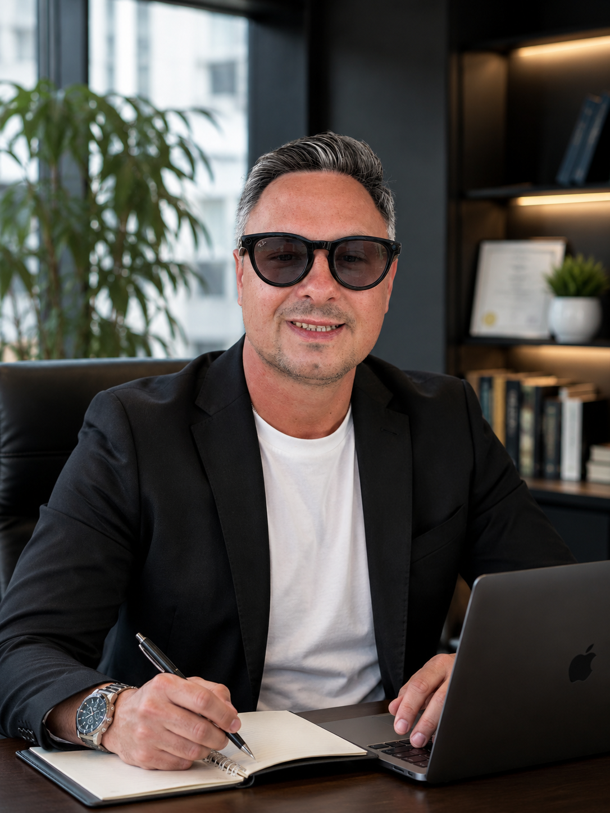

Bubble Tea Boutique · Pequeños espacios. Grandes beneficios
Branding, diseño y contenido creados para convertir visitas en clientes.

Bubble Tea Boutique
Pequeños espacios. Grandes beneficios.
Este pequeño espacio de 87 m² demuestra cómo una superficie compacta puede convertirse en un verdadero generador de beneficios, contenido y presencia de marca.
Un proyecto creado para mostrar cómo un espacio reducido puede transformarse en una marca con identidad propia, alto valor visual y fuerte potencial comercial.
Diseño pensado para atraer clientes
Bubble Tea Boutique combina arquitectura comercial, branding y narrativa visual para transformar cada metro cuadrado en una experiencia atractiva, compartible y rentable. El espacio no solo funciona como local: funciona como una herramienta de marketing diseñada para captar atención y generar flujo constante de clientes.
Branding y experiencia visual
El proyecto incluye desarrollo de naming, logotipo, paleta cromática, selección de materiales, iluminación y dirección estética. Cada elemento está diseñado para construir una imagen coherente, reconocible y preparada para redes sociales y campañas visuales.
Un espacio creado para generar contenido
Cada rincón está pensado para producir fotografías, vídeos y recorridos visuales capaces de atraer atención incluso antes de la apertura del local. El diseño se convierte en contenido, y el contenido en visibilidad, posicionamiento y alcance orgánico.
Arquitectura comercial con enfoque estratégico
Más que decoración, el objetivo es crear una experiencia capaz de transmitir propuesta de valor, confianza y personalidad de marca desde el primer vistazo. Un espacio pequeño puede generar un gran impacto cuando diseño, identidad y estrategia trabajan juntos.
Convierte tu espacio en contenido que atrae clientes antes de abrir las puertas.
Recorrido en vídeo
Un recorrido visual permite mostrar el espacio antes incluso de la apertura del negocio. Este tipo de contenido ayuda a presentar la experiencia, la atmósfera y la identidad de marca de una forma mucho más emocional y atractiva que las imágenes estáticas.
El vídeo puede utilizarse en redes sociales, campañas publicitarias, páginas web y presentaciones comerciales, generando mayor atención, confianza y expectativa alrededor del proyecto.
Además de reforzar la imagen de marca, el recorrido visual se convierte en una herramienta de marketing capaz de atraer nuevos clientes, aumentar la visibilidad online y diferenciar el negocio frente a la competencia.
Explora el espacio desde cualquier ángulo y transmite la experiencia antes de la visita.